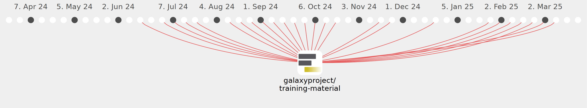

teresa-m

Commits all-time: 270
Commits last year: 261

(261)
- 027df0c
- efcbe84
- 259ad76
- 9c4d473
- 1896fde
- a80957e
- b54dcf2
- 2bb73de
- 894d9d4
- 562ae62
- 67cb877
- 12a6263
- 8804009
- 263d3cb
- bf68463
- 9865727
- cfa7de7
- 049a6c5
- 5dedecb
- 8d3c61e
- 6ba6281
- c84fa65
- 526986e
- c88d43d
- 0f3ff93
- db3c63d
- 61c8bf0
- fcaacdb
- 8d13092
- d1dc39a
- 1d2aaa2
- d7c2329
- 66c61bb
- b4a82b0
- 6290d9b
- 6bd3f64
- 359c9c1
- 7bb21fc
- 422e3f8
- 4af7ccd
- 969bdf7
- a3f5591
- 63dcf1d
- c5be2bc
- 7791729
- 9f43c31
- 2a4b0c5
- 3b9385f
- 6cfcbfe
- b343b16
- 40b8826
- b13afdb
- 4ddd918
- bc3bc38
- 93dfe2a
- a3a7e5a
- 855a8d9
- 9629f76
- 1a60c81
- 77cd52e
- 9feedcc
- 979a2ea
- 3878c26
- a052a7f
- 459f2d8
- 1b171b8
- 0da5b99
- 4a6caca
- 0952768
- 70d8054
- 656fa9e
- 7be2ca0
- 82044f1
- 8d4ad8f
- 16833e3
- 6593ad7
- 7114146
- e33fa82
- 1cc488c
- 6dc2c0d
- 075992e
- 523d2b1
- 169c16a
- d0d8b28
- d018322
- 92a62f6
- 6eb495b
- ac8cfe1
- a372a17
- cc5def1
- 6506693
- a0b10ba
- 65b7bf1
- 690bb0c
- 1c3c9ab
- 0a3bca2
- 599bfaf
- 00ee6ae
- 35f1482
- a833a12
- 8417680
- d6584c5
- b9d4233
- 09068f4
- 499f510
- 7d4b529
- 0321e19
- b7738fc
- b342e52
- 198d22a
- fce222c
- 819f776
- c48dbe7
- 7e0b649
- edddbb1
- e22f4f9
- f4b9079
- 8b427e6
- f0d15a4
- d008307
- dd02f37
- b8165bc
- 4f07aa5
- 18bd316
- 113ebb6
- dbe6dfb
- 1a9ad4d
- 4c9a4d8
- ebba7ed
- 067c5b9
- 81d3fcb
- 12b55ff
- 9efd646
- 7fee388
- ce2ae4e
- 6f2f33f
- d33e429
- 4e05898
- 8af5986
- 61837e5
- 246dea8
- 12e96cb
- 5fe39b6
- 58a9115
- 3b297b4
- a15e2b5
- ea54c0b
- a2a6a83
- 34bdc38
- c1dc3d9
- 55637be
- 1b8d075
- ebfcb24
- 76c2217
- d875871
- 937b7c9
- 63d03bc
- 8d50ae9
- 20a48db
- a629ec0
- 2f9f074
- 9a0b124
- c77b26d
- a32c7a6
- 3313999
- cd7246e
- d2b2e0f
- 8147d7b
- 89b1e75
- b2b9426
- a179236
- f031f3f
- 59a85c1
- 555e2f6
- d142f10
- 748bb07
- ae15e82
- efc7be5
- 3c90fe3
- a395caa
- f800613
- d14fd5e
- 13a49be
- 7995409
- 5d53a1e
- 8175b02
- 0fe3fae
- 007a662
- 394b171
- 195195e
- 383bbbd
- 66c5162
- 7f675b2
- 628da24
- 468a94a
- fc7cfa0
- 1e75f18
- e3475a5
- ffe0758
- 08dfccc
- 1645bde
- 24c106f
- 179de3f
- 8a1b9bf
- 1d8dad0
- 412ee1e
- fc2dc68
- b412b49
- 4cbcc6a
- d9e8380
- 8fc0111
- da7496d
- cdd6b4e
- 6c45198
- 311d362
- 5605827
- d14af87
- f24e405
- 77f1886
- 6cc3503
- 420a4cb
- cc5cc65
- b4d09f5
- 1232a19
- 01136cf
- ddc1df6
- 37da78c
- 2af2673
- 10db759
- c76ed5e
- 004c725
- 5f5c59f
- 00083cf
- 60de4eb
- 9048f36
- 61ca631
- b86f63a
- 468cd45
- 0f69d73
- 1e8e158
- 424b41b
- f8c7252
- b5c5569
- e138552
- 92b5776
- 0c2fc5d
- 1cfc783
- 02b8619
- 751e0ec
- 9602ade
- d9fd86a
- 4379aca
- aa06d2a
- f3c9536
- 8280441
- 5ed4cae
- 43d7ef3
- 0acab9d
- f7c9513
- dde82b1
- 4f4c2dc